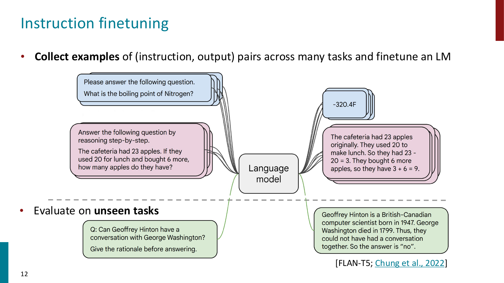
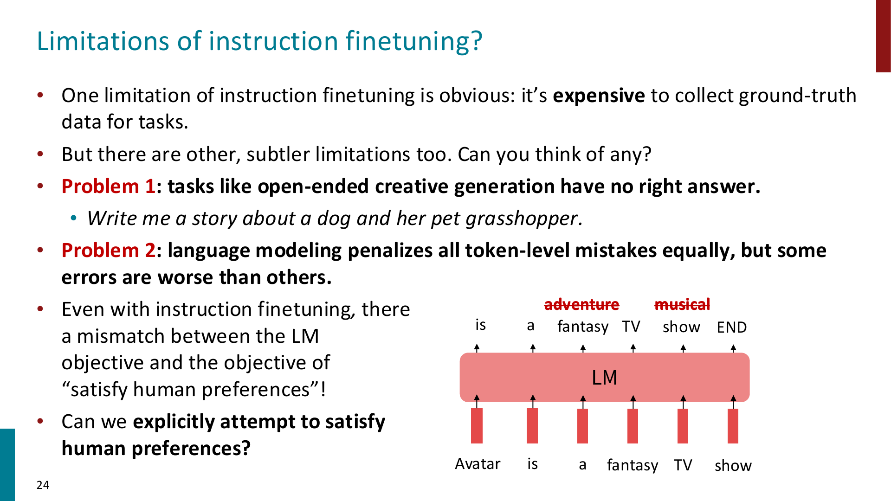
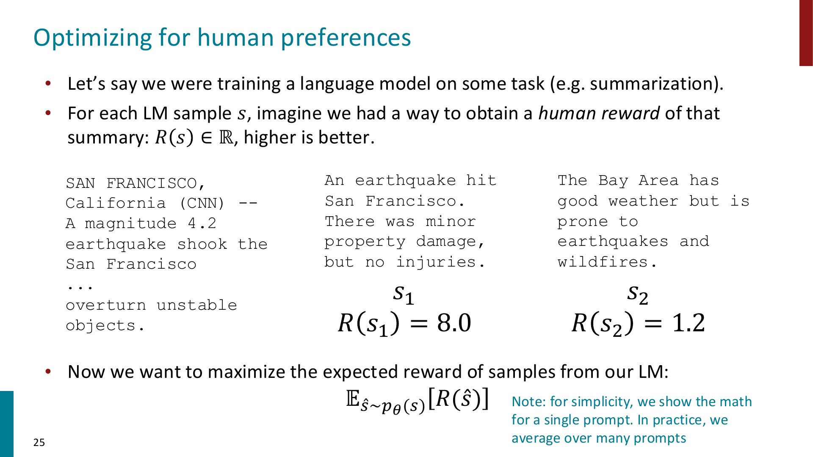
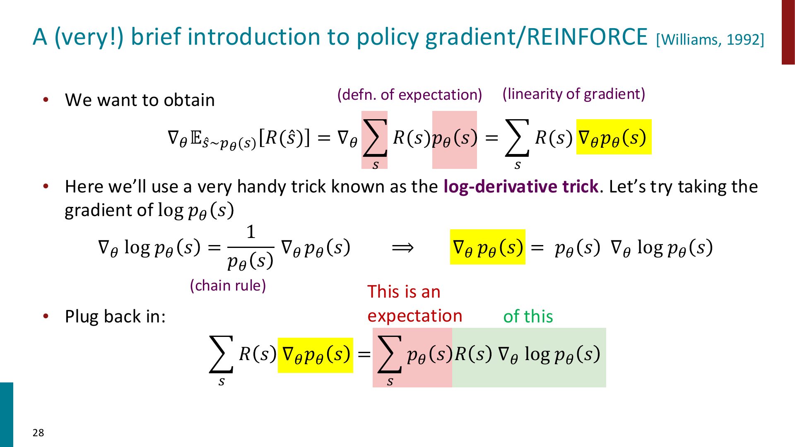
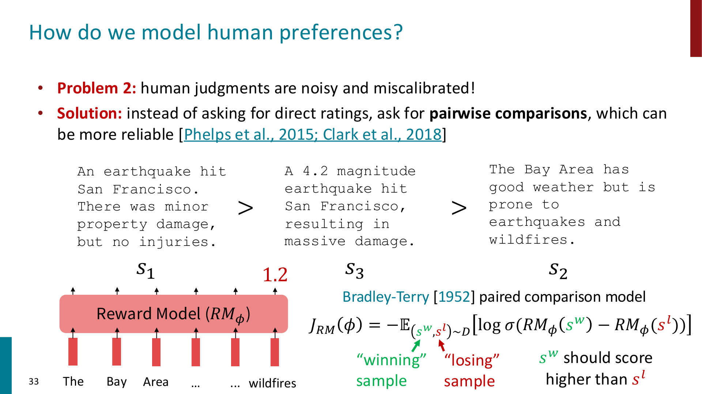
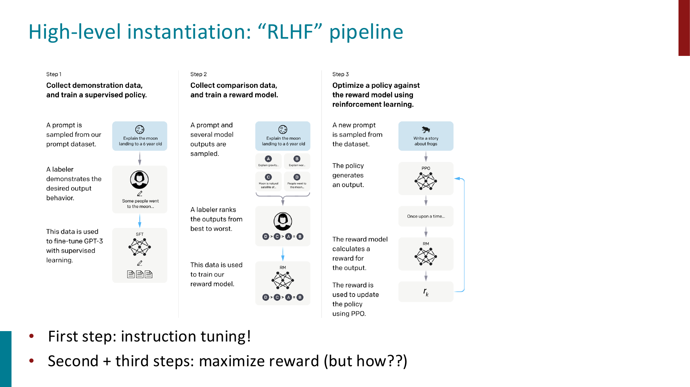
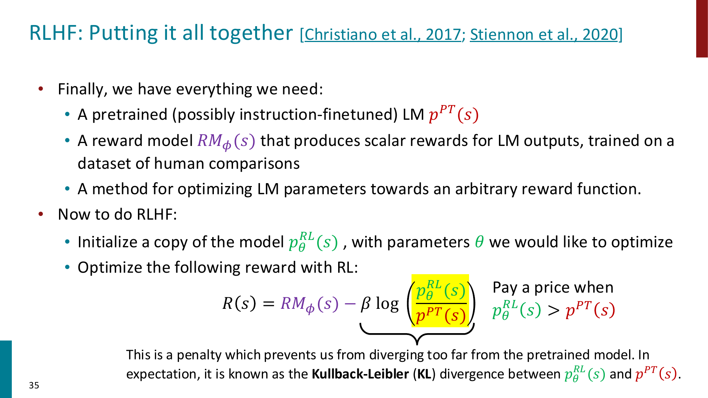
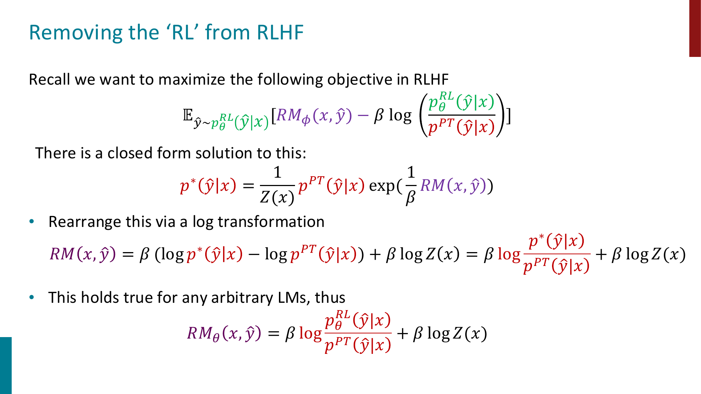
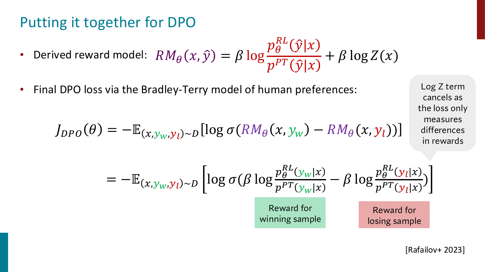

Posttraining
Pretraining 让 language model 学会了大量语言统计规律和世界知识，但它的训练目标本质上仍然是：
这并不等价于：
因此，base language model 往往还需要额外的 posttraining，让模型从“会续写文本”变成“能按照用户意图完成任务的 assistant”
Important
Posttraining 的核心目标不是继续扩大预训练语料，而是让模型行为更符合人类需求。
常见步骤包括 instruction finetuning, preference modeling, RLHF, DPO 等。
Instruction Finetuning
Language modeling \(\ne\) assisting users
一个 pretrained LM 只是在学习：
如果给它一个 prompt，它最自然的行为是“继续写看起来像训练语料的文本”，而不一定是在认真完成用户指令
Instruction finetuning 的想法是：收集大量(instruction, output) pair，然后用 supervised learning 去 finetune language model

例如训练数据可以是：
Instruction: Answer the following question by reasoning step-by-step.
Input: The cafeteria had 23 apples...
Output: The cafeteria had 23 apples originally...
训练目标仍然是 language modeling，只是条件变成了 instruction：
等价于最小化：
Tip
Instruction finetuning 可以理解为：把很多不同任务都写成自然语言指令，让模型学会“看到指令后应该输出什么样的答案”。
Scaling up finetuning
普通 finetuning 往往只针对一个具体任务，例如 sentiment classification
Instruction finetuning 则是把 finetuning 扩展到 many tasks：
- classification
- sequence tagging
- rewriting
- translation
- QA
- reasoning with rationale
- summarization
这使模型在训练时见过很多 task formats，测试时即使遇到 unseen task，也更可能理解 instruction 的含义
Important
Instruction finetuning 的效果也强依赖 scale：
model 越大、instruction tuning data 越多，通常提升越明显。
甚至由于 Instruction finetuning 使用的数据量非常大，有些时候我们更愿意将其归为预训练而非微调
Why instruction finetuning is not enough?
Instruction finetuning 有两个明显限制

Problem 1: 很多任务没有唯一正确答案
例如：
开放式写作、对话、创意生成、总结等任务，很难说只有一个 ground-truth output
Problem 2: token-level loss 不能表达人类偏好
Language modeling loss 会把所有 token-level mistake 当成类似的错误
但在人类看来，不同错误的严重程度完全不同：
- 少一个无关紧要的形容词，可能问题不大
- 编造事实、误导用户、语气冒犯，问题很大
Important
Instruction finetuning 仍然是在做 supervised next-token prediction。
但我们真正想优化的是：输出是否满足 human preferences。
Optimizing for Human Preferences
假设我们有一个 prompt，LM 可以生成不同 response
如果人类可以给每个 response 一个 reward：
其中 \(s\) 是模型生成的 sample，reward 越高代表人类越喜欢
那么我们真正想优化的是：
也就是：希望模型生成的样本在期望意义下获得更高的人类偏好分数

Tip
这一步把“训练语言模型”转成了一个 reinforcement learning 问题：
LM 是 policy，生成的文本是 action sequence，人类偏好是 reward。
Policy Gradient and REINFORCE
问题是：如何更新参数 \(\theta\)，让模型生成高 reward response 的概率变大？
我们想做 gradient ascent：
但 reward function 可能是不可微的，因为它可能来自人类判断
policy gradient 使用一个重要技巧：log-derivative trick
因此：
代回期望梯度：

用 Monte Carlo samples 估计：
直觉上：
- 如果 \(R(s_i)\) 高，就增加模型生成 \(s_i\) 的概率
- 如果 \(R(s_i)\) 低，就降低模型生成 \(s_i\) 的概率
Important
REINFORCE 的公式直觉很简单：reinforce good actions。
但实际训练 LM 时，vanilla REINFORCE 方差高、训练不稳定、sample inefficient，所以实际 RLHF 中常用 PPO 这类更稳定的 RL algorithm。
PPO
PPO 全称为 Proximal Policy Optimization
它的核心思想是：每次更新不要让 policy 变化太大
如果新 policy 相比旧 policy 改得太激进，可能会让模型突然偏离原本稳定的语言分布，训练变得不稳定
PPO 使用 probability ratio：
并通过 clipping 限制 update range，例如限制在：
Tip
PPO 的作用可以理解为：既要让模型朝高 reward 的方向走，又不能一步走太远。
Reward Modeling
直接让人类给每个模型输出打分很贵，而且人类打分容易 noisy and miscalibrated
所以 RLHF 通常先训练一个 reward model
它输入一个 response，输出一个 scalar reward，用来近似人类偏好
但比起让人类直接给分数，实践中更常见的是收集 pairwise comparisons
例如给定同一个 prompt 的两个回答：
表示人类更喜欢 winning sample \(s_w\)，而不是 losing sample \(s_l\)

Reward model 的训练目标使用 Bradley-Terry paired comparison model：
直觉是：
也就是 reward model 应该给人类更喜欢的回答更高分
Important
Pairwise comparison 通常比直接打分更可靠。
人类可能很难稳定判断一个回答是 7 分还是 8 分，但更容易判断两个回答哪个更好。
RLHF
RLHF 全称为 Reinforcement Learning from Human Feedback
它把前面几个部分组合起来：
- 先有一个 pretrained / instruction-finetuned LM
- 收集人类 preference data
- 训练 reward model \(RM_\phi\)
- 用 RL 优化 LM，使它生成 reward model 更喜欢的回答

在课件中，RLHF 的 reward 写成：
其中：
- \(RM_\phi(s)\) 是 reward model 给出的偏好分数
- \(p_\theta^{RL}\) 是正在被 RL 优化的 policy
- \(p^{PT}\) 是原始 pretrained / instruction-finetuned model
- 第二项是 KL penalty，防止模型偏离原始模型太远

Important
RLHF 不只是“最大化 reward model 分数”。
它还通过 KL penalty 约束新模型不要离原模型太远，否则模型可能为了骗 reward model 而产生奇怪、退化或不真实的输出。
InstructGPT and ChatGPT
课件中把 InstructGPT / ChatGPT 看成 instruction finetuning + RLHF 的代表
大致流程是：
- pretrain 一个 large language model
- 用人工 demonstration 做 supervised instruction finetuning
- 收集多个 model outputs 的 human ranking
- 训练 reward model
- 用 PPO 优化 policy
InstructGPT 的重要意义是：它把 RLHF 扩展到了大量真实用户任务上，而不仅是单一任务如 summarization
ChatGPT 则可以理解为把 instruction finetuning + RLHF 用到 dialog agent 场景中
Limitations of RL and Reward Modeling
RLHF 很强，但它也有明显问题
Human preferences are unreliable
人类偏好本身并不稳定：
- 不同 annotator 的标准可能不同
- 同一个 annotator 在不同时间判断也可能不同
- 标注者可能有文化、政治、教育背景上的 bias
Reward hacking
RL 中常见问题是 reward hacking
也就是模型找到一种方式最大化 reward，但这种方式并不符合我们真正想要的目标
在 chatbot 中，这可能表现为：
- 回答看起来很权威，但其实是 hallucination
- 输出更长、更有条理，因此 reward model 更喜欢，但内容未必更准确
- 学会迎合偏好模型，而不是真正解决用户问题
Important
Reward model 只是人类偏好的近似模型。
如果过度优化这个近似目标，模型可能学会 exploit reward model，而不是满足真实人类需求。
RL optimization is complex
RLHF 中的 PPO 训练也比较复杂：
- 需要 online sampling，训练慢
- 需要 fitting value function
- 对 hyperparameters 敏感
- 训练过程不稳定
- compute cost 高
这也是后面 DPO 这类方法出现的重要动机：能不能保留 preference optimization 的效果，但去掉复杂的 RL loop？
Direct Preference Optimization
DPO 全称为 Direct Preference Optimization
它的目标是：直接用 preference data 优化 policy，而不显式训练 reward model，也不跑 PPO
换句话说：
removing the "RL" from RLHF
From RLHF objective to DPO
RLHF 想最大化：
这个目标有一个 closed-form optimal policy：
整理后可以得到：

DPO 的关键想法是：用当前 policy \(p_\theta\) 来表示这个 implicit reward
其中 \(p_{\text{ref}}\) 通常是 reference model，例如 SFT model
Tip
DPO 不需要单独训练一个 reward model。
它把“这个回答有多好”转成了当前 policy 相对 reference policy 给这个回答提高了多少概率。
DPO loss
Preference data 的形式是：
其中：
- \(x\) 是 prompt
- \(y_w\) 是 human-preferred winning response
- \(y_l\) 是 losing response
DPO 使用 Bradley-Terry 形式：
把 implicit reward 代入后：

注意 \(\beta\log Z(x)\) 会消掉，因为 loss 只关心 winning 和 losing response 的 reward 差
Important
DPO 的直觉是：
- 提高模型给 preferred response \(y_w\) 的相对概率
- 降低模型给 dispreferred response \(y_l\) 的相对概率
- 同时通过 reference model ratio 保持模型不要偏离原分布太远
Human Preference Data
Posttraining 的效果很大程度上依赖 preference data 的质量
但这些 labels 本身也有复杂问题：
- RLHF labels 往往来自低薪标注者
- 标注者偏好会影响模型行为
- 不同国家、文化、政治立场、教育背景的人对“好回答”的标准可能不同
- 如果 preference data 有偏，模型会把这种偏好学习进去
Important
Human feedback 并不是一个客观、无偏、完美的 reward source。
它本身也是一种带有社会、文化、经济背景的训练信号。
Human feedback vs AI feedback
由于 human feedback 很贵，后续很多工作尝试使用 AI feedback
例如：
- 用更强模型给 response 排名
- 用模型自己生成 instruction tuning data
- 用模型 critique 或 revise 自己的输出
这可以降低数据成本，但也带来新的风险：
- AI feedback 会继承 judge model 的偏差
- 如果模型互相训练，错误可能被放大
- 评估结果可能更偏向“像模型喜欢的回答”，而不是真正符合人类需求
Summary of Posttraining
可以把 Posttraining 的主线总结成：
- Pretraining 让模型学会语言建模，但不保证模型会按照用户意图行动
- Instruction finetuning 用
(instruction, output)数据让模型学会 follow instructions - Instruction finetuning 仍然受限于 token-level supervised learning，无法充分表达 open-ended human preferences
- RLHF 用 human preference data 训练 reward model，再用 RL 优化 LM
- Reward model 通常用 pairwise comparisons 和 Bradley-Terry loss 训练
- RLHF 需要 KL penalty，防止 policy 偏离原模型太远
- PPO 是常见 RLHF 优化方法，但复杂、昂贵、对超参数敏感
- DPO 直接用 preference pairs 优化 policy，绕开显式 reward model 和 PPO
- Preference data 本身也可能带有 bias，因此 posttraining 不只是技术问题，也是数据和价值选择问题